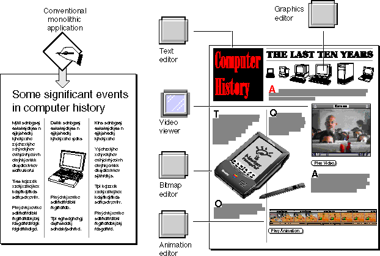

Why OpenDoc?
Customer demand for increasingly sophisticated and integrated software solutions has led to large and sometimes unwieldy application packages, feature-laden but difficult to maintain and modify. Developing, maintaining, and upgrading these large, cumbersome applications can require a vast organization; the programs are difficult to create, they are expensive to maintain, and they can take years to revise.Upgrading or fixing bugs in one component of such an application requires the developer to release--and the customer to buy--a completely new version of the entire package. Some developers have added extension mechanisms to their packages to allow addition or replacement of certain components, but the extensions are proprietary, incompatible with other applications, and applicable only to certain parts of the package.
Because of the barriers put up by the current application architecture, users are often frustrated in attempting to perform common tasks.
OpenDoc addresses these issues by defining a new kind of application, one with advantages to both users and developers in the increasingly competitive software markets of today and the future. OpenDoc replaces the architecture of monolithic conventional applications, in which a single software package is responsible for all of its documents' contents, with one of components, in which each software module edits its own content, no matter what document that content may be in. See Figure 1-1.
- Users often cannot assemble complex documents from multiple sources because of the many error-prone, manual operations required.
- Users usually cannot edit different kinds of content within a single document. Most applications support only one or a few different kinds of content, such as a single format for text and a single format for graphics. Furthermore, the editing procedures for a given kind of content are different across applications, complicating data transfer among applications.
- Business users are forced to choose between the reliability of shrink-wrapped software and the extra features of custom solutions designed for their needs. To increase reliability while maintaining and adding custom features, businesses need simple and standardized designs and procedures.
- Business users, whose hardware is often heterogeneous, demand cross-
platform versions of their application packages. At the same time, application developers wish to leverage their development investment by delivering their software on multiple platforms. But the conflicting requirements and user-interface conventions of different platforms make cross-platform software difficult to develop and confusing to use.- Users may not be able to use an editor or tool provided by an individual developer or small development team because the editor may be incompatible with the users' current application package, and the developer may have insufficient resources to develop an entire integrated package.
- Computers often frustrate users' efforts to collaborate with others. Users cannot share documents across applications, recover changes to shared documents, or, with rare exceptions, manipulate the contents of one document from within another.
Figure 1-1 Monolithic application versus components

OpenDoc allows developers, large or small, to take a modular approach to development and maintenance. Its component-software architecture makes the design, development, testing, and marketing of integrated software packages far easier and more reliable. Developers can make incremental improvements to products without a complete revision cycle and can get those improvements to users far more rapidly than is possible today.For programmers, this is a radical shift in approach, although its implementation is not difficult. For users, this is only a minor shift in working style; its main effect is to remove the barriers to constructing and using complex documents imposed by conventional monolithic application architecture. It gives them what they are used to, plus more.
OpenDoc components allow users to assemble custom compound documents out of diverse types of data. They also support cross-platform sharing of information. They resolve user frustrations with conventional applications by removing the barriers listed earlier.
Some developers bundle components together into packages that are similar to conventional monolithic applications; others sell individual components for specialized purposes, to users or to other developers for bundling. Users can purchase packages and use them as is, or they can modify a package by adding or replacing individual components.
- OpenDoc makes it easy for users to assemble any kind of content in any kind of document. OpenDoc documents will accept all kinds of media for which components exist, now and in the future.
- OpenDoc makes it easy for users to edit any kind of data, in place, in any document. Users can readily transfer that data to any other document and edit it there just as easily. Users can focus on document content and take advantage of the context provided by the surrounding document.
- OpenDoc allows businesses to customize their software solutions by assembling components into shrink-wrapped packages, thereby obtaining needed features, increasing reliability, and saving on training costs. In-house developers can then enhance the packages by developing components that integrate smoothly with the off-the-shelf software.
While providing these advantages, OpenDoc exists harmoniously with existing monolithic applications; the user need not abandon conventional applications in order to start using OpenDoc. Furthermore, it is relatively easy for a developer, as a first step toward adopting OpenDoc, to modify a conventional application so that it works with OpenDoc components.
- OpenDoc documents are potentially transferable across platforms. OpenDoc components are easy to port and easy to integrate with existing applications on any platform.
- OpenDoc lowers market barriers to wide, cross-platform distribution for small developers. Any component can be designed to work in any OpenDoc document on any platform. Small development teams can create individual components with the knowledge that they will integrate smoothly with existing packages created by larger developers.
- OpenDoc promotes collaboration, allowing users simultaneously or separately to build documents as a team, on a single machine or across networks. Documents are not owned by single applications, and changes are recoverable through a draft history that is available for every document. Pervasive scripting support, rich data-transfer capabilities, and an extension mechanism allow users to manipulate their own and other documents in powerful ways.
Table 1-1 summarizes some of the principal advantages of the OpenDoc approach to software, for both users and developers.